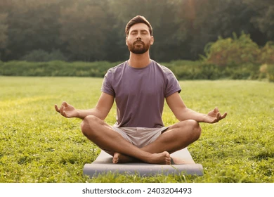

Padmasana
- Start in a seated position: Sit on a mat with your legs stretched straight out in front of you and your spine erect.
- Bend the right leg: Bend your right knee and use your hand to lift the right foot onto the left thigh. The sole of the foot should be facing upward, and the heel should be close to your abdomen.
- Bend the left leg: Now, bend your left knee and place the left foot on top of the right thigh. The sole of this foot should also be facing upward, with the heel near your abdomen
- Position your hands
- Sit straight
- Hold the pose
- Release
Vrikshasana, or Tree Pose, is a standing balancing yoga pose that involves standing on one leg while placing the other foot on the inner thigh of the standing leg and raising the arms overhead. It is known for improving balance, stability, and concentration, while also strengthening leg muscles and toning the body. The name comes from the Sanskrit words "Vriksha" (tree) and "Asana" (pose), symbolizing the strength and grace of a tree
Uttanasana is a standing forward bend yoga pose that involves hinging at the hips to fold the torso over the legs, with the goal of relaxing the head towards the feet. To perform the pose, stand in Tadasana, bend your knees slightly, and on an exhale, hinge from the hips to fold forward, keeping the spine long initially. A beginner can bend their knees significantly to avoid strain, while a more advanced practitioner can keep the legs straighter.